Descrição do Projeto
O projeto teve como objetivo projetar e desenvolver um veículo de superfície não tripulado (USV), do tipo catamarã, totalmente autônomo, capaz de operar em cooperação com um veículo aéreo não tripulado (UAV). O trabalho foi desenvolvido em dupla com meu colega João Marcelo Ribeiro Silva, sob orientação do professor Accacio F. dos Santos Neto.
USV – Catamarã Autônomo
O USV foi projetado com dois propulsores aéreos e uma plataforma de pouso para o UAV. A maior parte das peças foi modelada em 3D no Autodesk Inventor, impressa em ABS por manufatura aditiva e posteriormente montada. O sistema embarcado foi implementado em uma placa de circuito impresso (PCB) própria, projetada no Proteus e usinada em uma fresadora CNC. O controle foi realizado por um ESP32, programado no PlatformIO, integrado aos seguintes sensores e atuadores:
- Módulo GPS GY-NEO6MV2
- Sensor de orientação HMC5883L
- Unidade inercial MPU-6050
- Dois ESCs para controle dos motores
UAV – Drone
Para a cooperação aérea, utilizamos o DJI Tello, responsável pelas operações de decolagem, voo e pouso sobre o catamarã.
Sistema de Comunicação
A comunicação entre o USV e o UAV foi implementada por meio do framework ROS, utilizando conexão Wi-Fi. Dessa forma, foi possível operar o drone com joystick, executar a navegação autônoma do USV e realizar a aquisição e armazenamento de dados das missões.
Perspectivas Futuras
O trabalho encontra-se em aprimoramento, com a elaboração de um artigo científico sobre odometria aplicada a ambos os veículos. Os próximos passos incluem o desenvolvimento de decolagem, pouso e voos autônomos do UAV, utilizando um marcador posicionado na plataforma do USV para maior precisão.
Trabalhos Publicados
Lista de artigos, papers e publicações científicas relacionados ao projeto:
Mídias
Alguns registros do projeto em imagens e vídeos:

 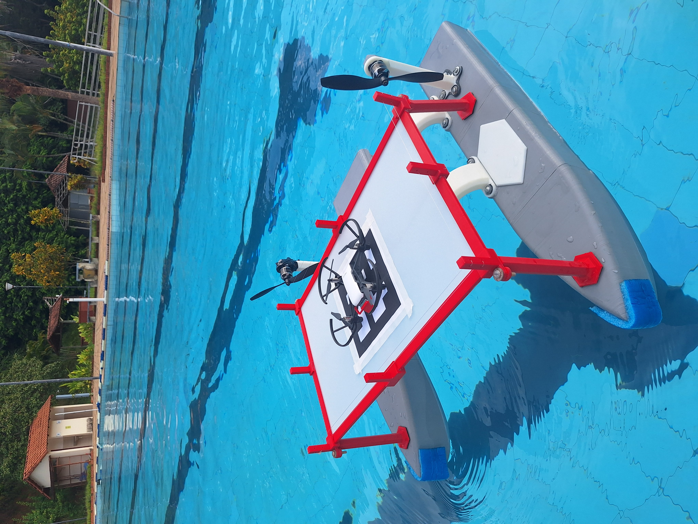
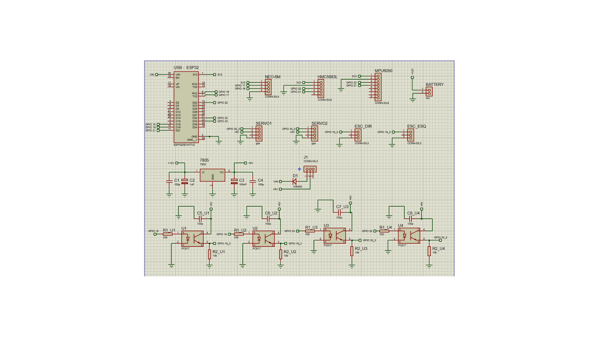
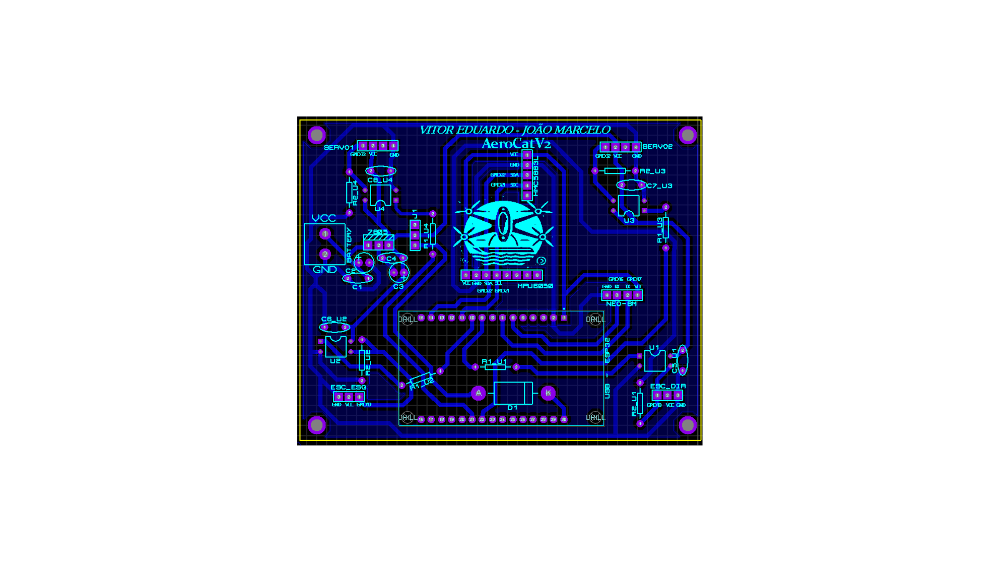
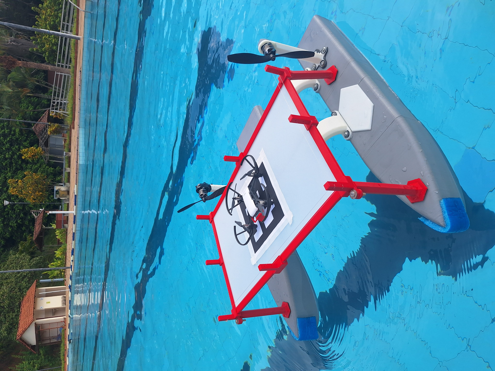
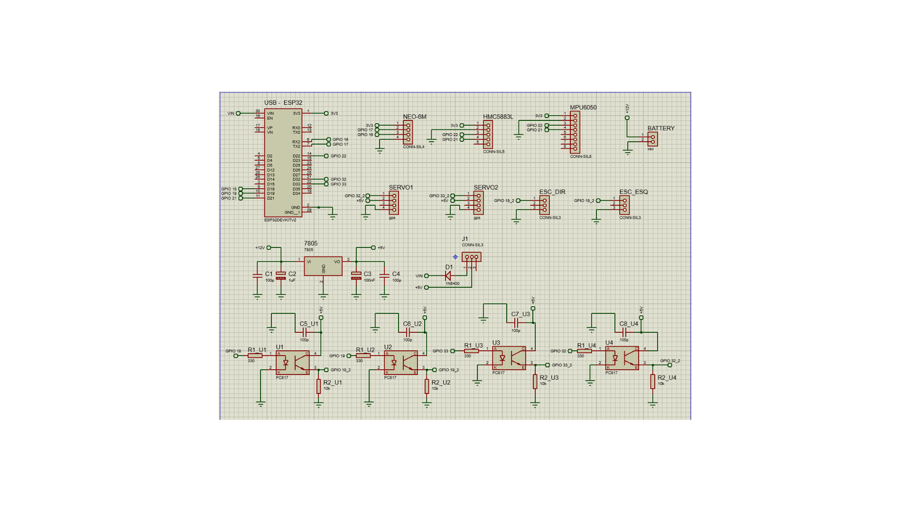
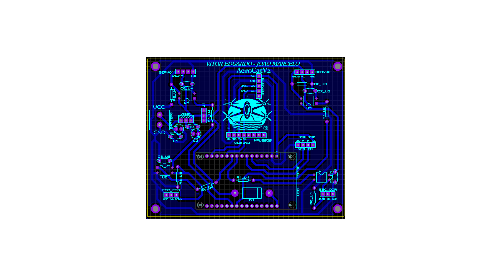
 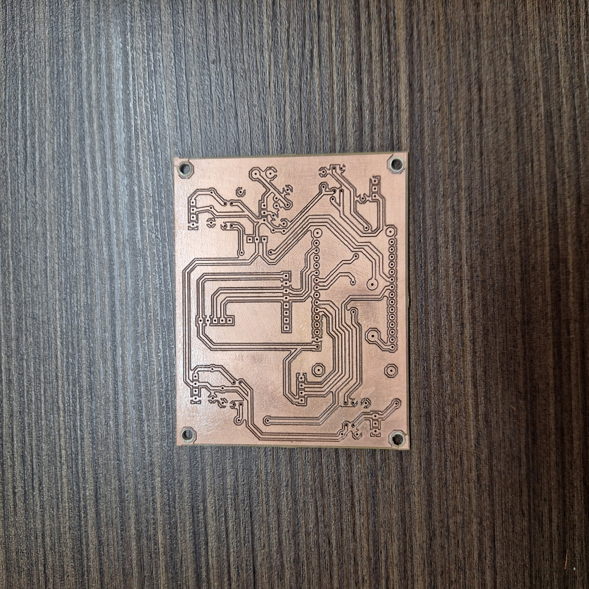
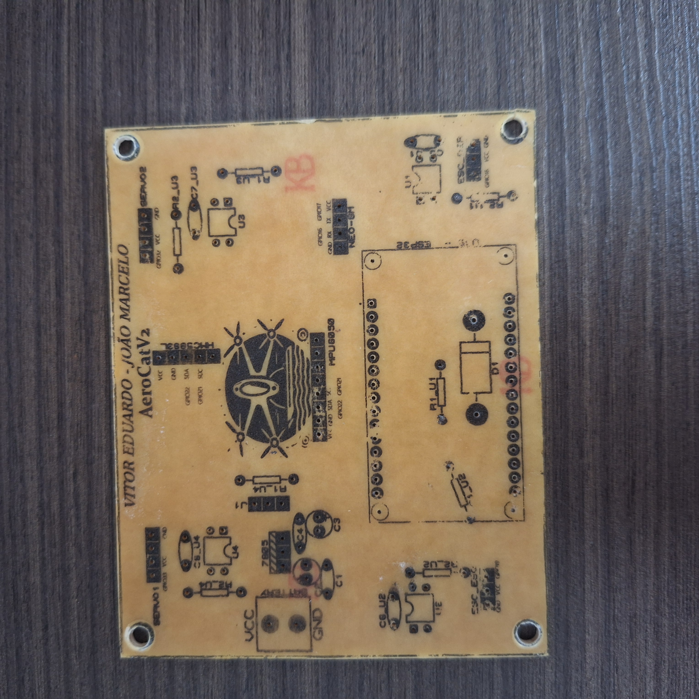
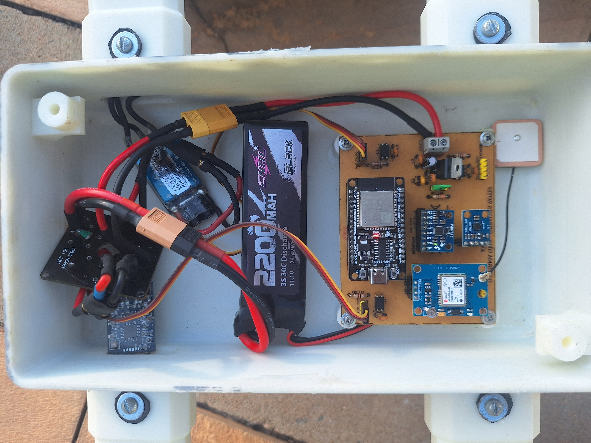
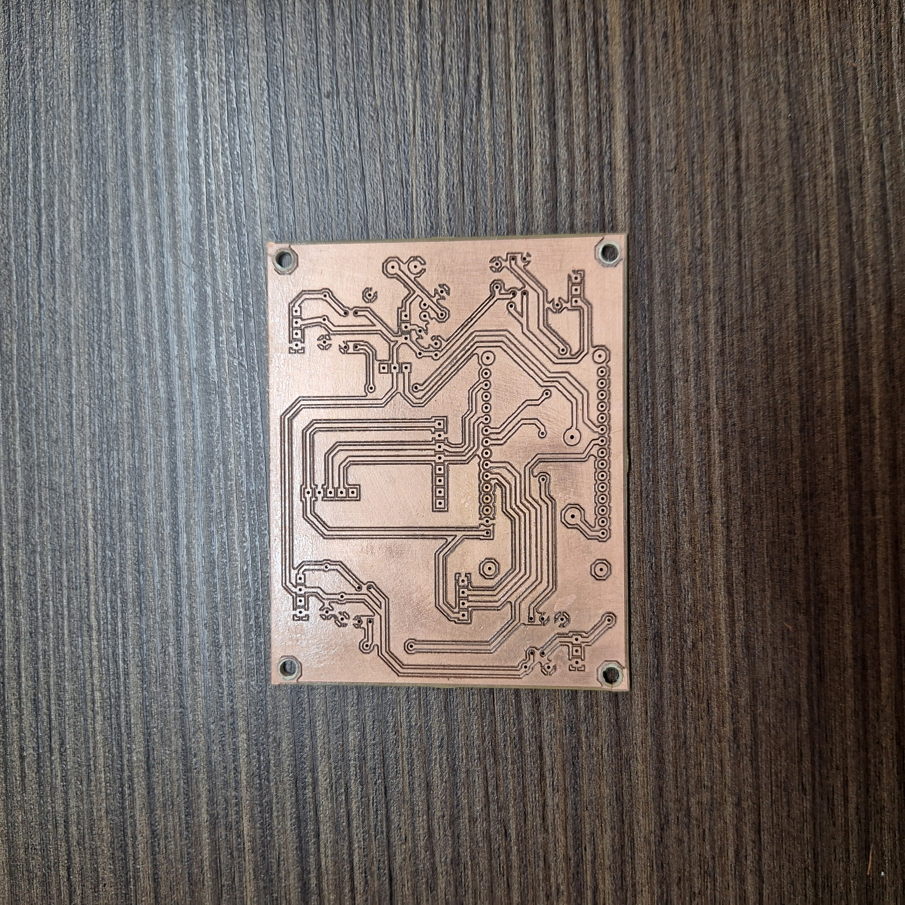
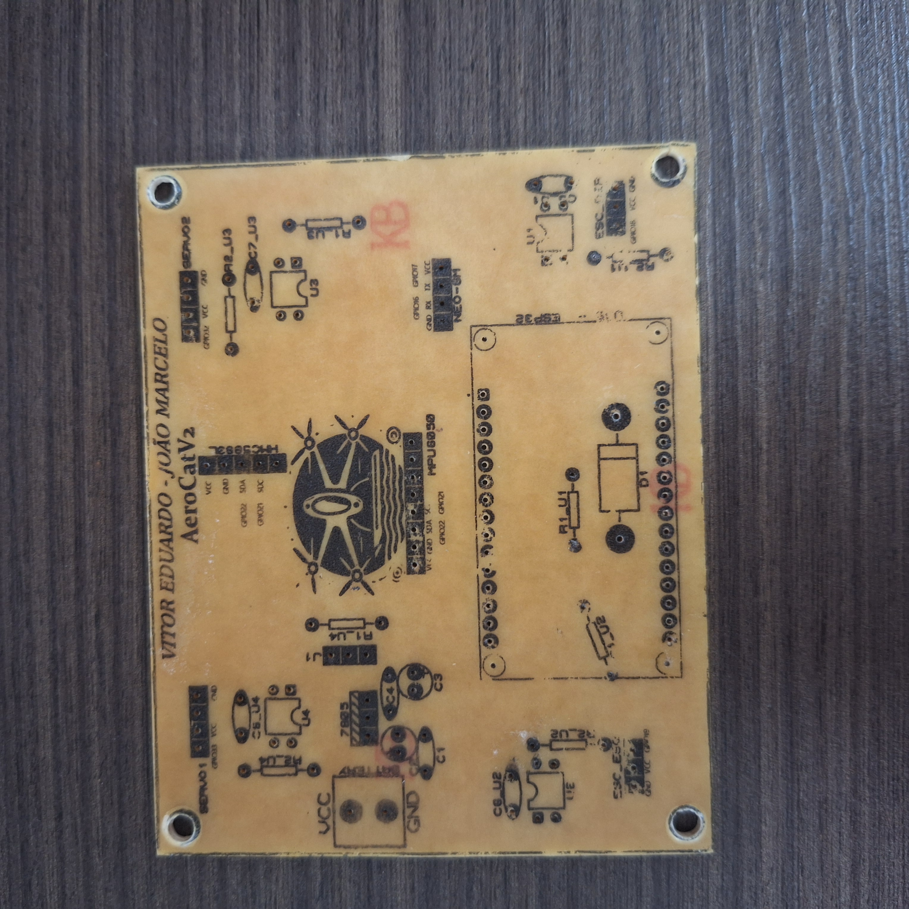
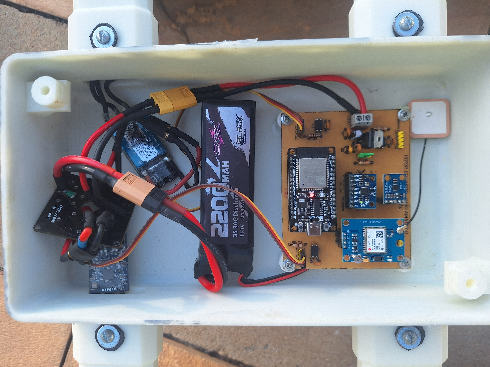
.png)
.png)
.png)